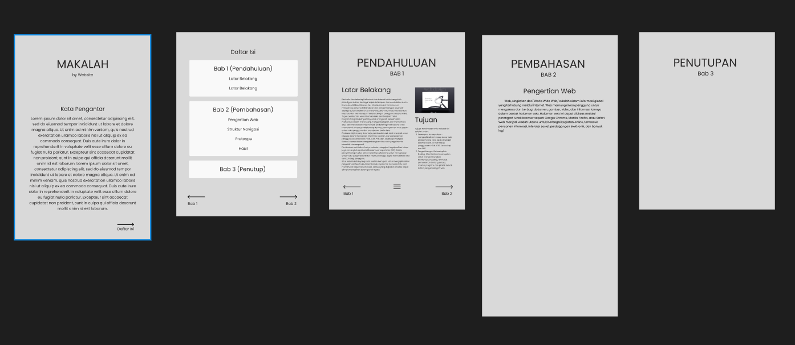

Pengertian Web
Web, singkatan dari "World Wide Web," adalah sistem informasi global yang terhubung melalui internet. Web memungkinkan pengguna untuk mengakses dan berbagi dokumen, gambar, video, dan informasi lainnya dalam bentuk halaman web. Halaman web ini dapat diakses melalui perangkat lunak browser seperti Google Chrome, Mozilla Firefox, atau Safari. Web menjadi wadah utama untuk berbagai kegiatan online, termasuk pencarian informasi, interaksi sosial, perdagangan elektronik, dan banyak lagi.
Bahasa Pemrograman dalam Pengembangan Web:
-
HTML (Hypertext Markup Language)
HTML adalah bahasa markup yang digunakan untuk membuat struktur dasar sebuah halaman web. HTML menggunakan tag untuk mendefinisikan elemen-elemen seperti teks, gambar, tabel, dan link. Setiap elemen ini membentuk kerangka dasar dari sebuah halaman web. Contohnya, tag <div> digunakan untuk membuat divisi atau bagian di dalam halaman web, sedangkan tag <p> digunakan untuk menandai paragraf.
-
CSS (Cascading Style Sheets)
CSS merupakan bahasa pemrograman yang digunakan untuk mengatur tata letak dan tampilan halaman web. Dengan CSS, pengembang dapat mengontrol warna, font, ukuran, dan posisi elemen-elemen HTML. Selain itu, CSS memungkinkan pengembang membuat halaman web responsif agar dapat menyesuaikan tampilan dengan berbagai perangkat, seperti desktop, tablet, dan smartphone.
-
JavaScript
JavaScript adalah bahasa pemrograman client-side yang digunakan untuk membuat interaktivitas di dalam halaman web. Dengan JavaScript, pengembang dapat membuat efek animasi, validasi formulir secara real-time, dan berbagai fungsi interaktif lainnya. Selain itu, JavaScript juga digunakan dalam pengembangan aplikasi web berbasis AJAX untuk memuat konten secara dinamis tanpa perlu me-refresh halaman.
-
PHP (Hypertext Preprocessor)
PHP adalah bahasa pemrograman server-side yang digunakan untuk membuat halaman web dinamis. Dengan PHP, pengembang dapat menghasilkan konten yang dapat berubah berdasarkan interaksi pengguna atau data yang diterima dari database. PHP umumnya digunakan dalam pengembangan web dinamis dan aplikasi server-side.
Struktur Navigasi
Struktur Navigasi yang kami gunakan yaitu struktur navigasi hirarki.

Prototype
Berikut adalah prototype website kami yang terakhir yang baru sampai dengan bab 2 selanjutnya dibuat langsung tanpa menggunakan desain awal.